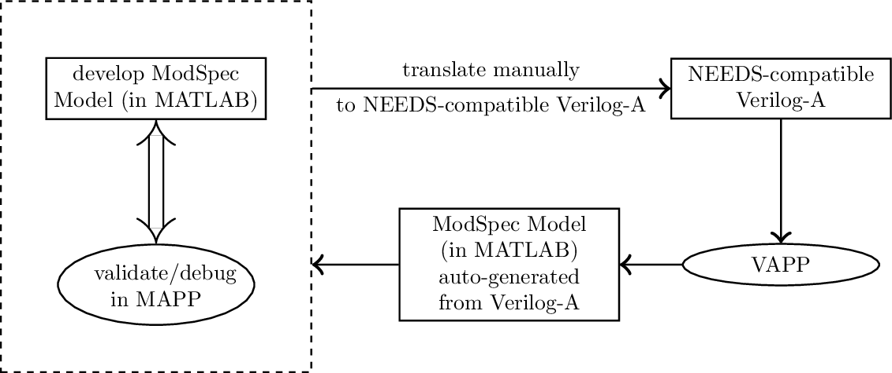

VAPP is a MATLAB/Octave tool that translates Verilog-A device models into ModSpec.
It is a subproject of the Berkeley Model and Algorithm Prototyping Platform (MAPP).
Download and Installation
Git users please refer to the README at the VAPP Github main page.
Non git users can access a zip file containing the latest VAPP snapshot using the following links.
For further instructions about installing VAPP, please refer to the README on Github or in the zip files provided in the links above.
The Purpose of VAPP
Device models are used by simulators as computational representations of physical devices. Most device models are written in the application specific language Verilog-A. Verilog-A is a high level language that uses an abstract node/branch based representation to describe device dynamics. Native Verilog-A code is not executable. It has to be converted into a DAE format before it can be executed.
VAPP takes a Verilog-A file as input and computes an internal DAE representation of the device code. It then prints out the model equations using the ModSpec API.
ModSpec models can be directly executed, probed, debugged without the need for a specific simulator. They can also be used in various simulations/analyses using MAPP.
Device Model Development Workflow using MAPP and VAPP

The above graphic shows a workflow for device model developers who want to be able to develop models in a computational environment such as MATLAB and then publish them using Verilog-A. In the first step, model developers implement, test and debug their model code using ModSpec in MATLAB/Octave. Second, robust model code is then ported to Verilog-A manually. Third, the Verilog-A model is converted back into ModSpec using VAPP so that the Verilog-A code can be validated by comparing the translated code against the original ModSpec code. The Verilog-A model is ready to be deployed if the simulation results obtained by using VAPP generated code match the results from the original code.